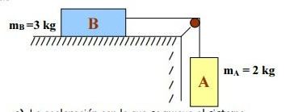

ru.-Sobre una mesa descansa un bloque B de madera
de 3kg unido a una cuerda que después de
pasar por una polea (masa y rozamiento de la polea
despreciables), cuelga verticalmente un cuerpo
A de 2kg de masa. Si el coeficiente de rozamiento del bloque B
con la mesa es 0,15. Calcula la
Tensión de la cuerda
